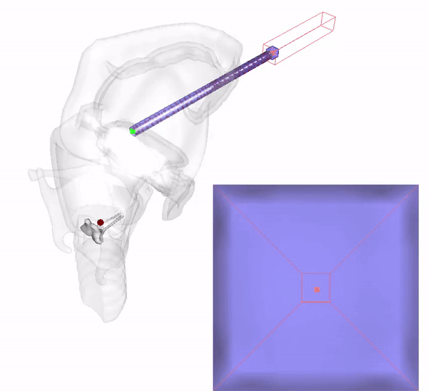
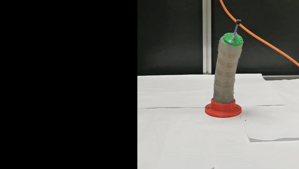
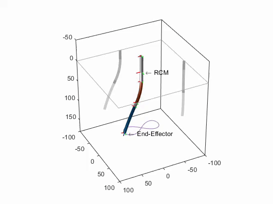
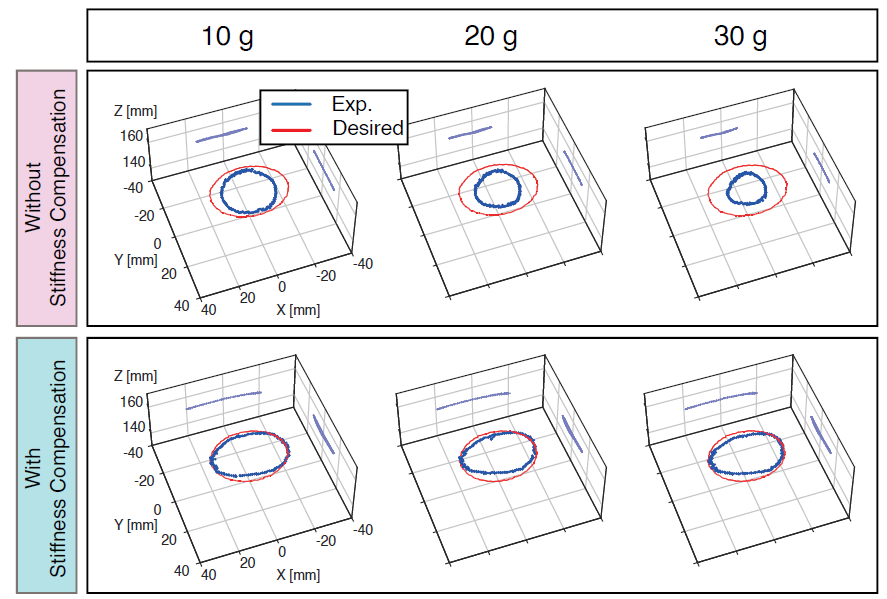
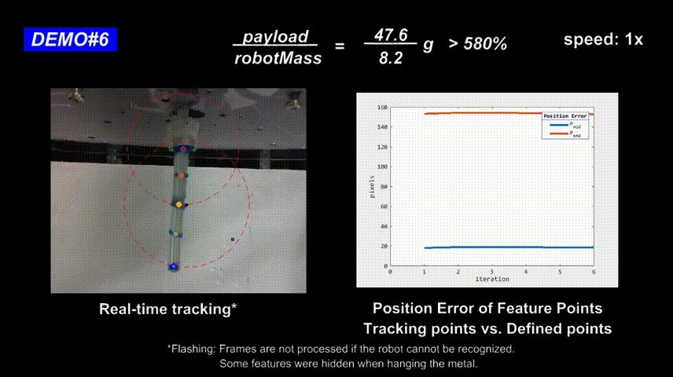
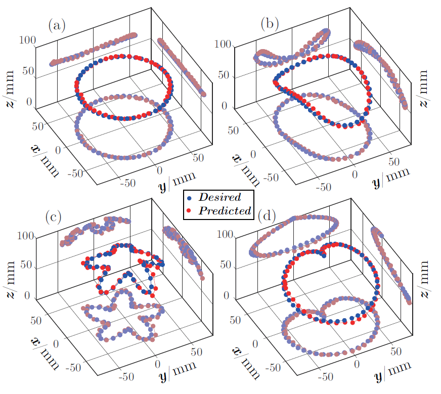

|
Opportunity
Looking for a Full-Time Research Assistant (RA) to work in person at CUHK for 8-10 months, starting from Early 2024. S/he will be responsible for a project related to High Dimensional Data-Driven Soft Robots. This project will primarily involve modeling, ML, simulation, and visual sensing.
Prospective students from ME/EE/CS/Control/Robotics or related disciplines are welcome to email me (Subject: FTRA-Year of Study-Univ-Major). CUHK undergrad students, fresh grads (i.e., you have obtained a bachelor's degree / master's degree), and MS students looking for internship opportunities will be ideal.
Interested candidates are expected to attach the following 3 documents:
-
Detailed CV
-
Publications (i.e., PDFs of your papers)
-
Research portfolio (no more than 3 slides demonstrating relevant demos/skills)
|

|
Gesture-based Steering Framework for Redundant Soft Robots
Jiewen Lai,
Bo Lu, Kaicheng Huang, Henry K. Chu*
IEEE/ASME Transactions on Mechatronics (T-MECH), 2024
pdf
video
code
tl;dr: A steering framework for redundant soft manipulators using real-time hand motion and gestures.
|
|

|
Sim-to-Real Transfer of Soft Robotic Navigation Strategies That
Learns from the Virtual Eye-in-Hand Vision
Jiewen Lai†,
Tian-Ao Ren†,
Wenchao Yue,
Shijian Su,
Jason Chan,
Hongliang Ren*
IEEE Transactions on Industrial Informatics (T-II), 2023
pdf
video
code
tl;dr: Transferring the navigation strategy that a redundant
soft robot learns from what it has seen in the SOFA-based virtual world to the real world.
|

|
Lightweight Pneumatically Elastic Backbone Structure with Modular
Construction and Nonlinear Interaction for Soft Actuators
Yang Yang,
Jiewen Lai,
Chaochao Xu, Zhiguo He, Pengcheng Jiao, Hongliang Ren*
Soft Robotics (SoRo), 2023
pdf
videos
tl;dr: Robotizing any strip-shaped balloons with mechanically
programmed 3D-printed shells.
|
|

|
Reconstructing External Force on the Circumferential Body of
Continuum Robot With Embedded Proprioceptive Sensors
Qingxiang Zhao,
Jiewen Lai,
Henry K. Chu*
IEEE Transactions on Industrial Electronics (T-IE), 2022
pdf
video
tl;dr: Endowing proprioception to soft robots with embedded
eGaIn vein through learning.
|
|

|
Constrained Motion Planning of A Cable-Driven Soft Robot with
Compressible Curvature Modeling
Jiewen Lai,
Bo Lu,
Henry K. Chu*
IEEE Robotics and Automation Letters (RA-L), 2022
pdf
video1
video2
code
tl;dr: Tip pose and whole-body motion planning of a 7-DOF soft
robot in constrained environments considering the cable-driven-induced length
change of its soft body.
|
|

|
Variable-Stiffness Control of A Dual-Segment Soft Robot using Depth
Vision
Jiewen Lai,
Bo Lu, Henry K. Chu*
IEEE/ASME Transactions on Mechatronics (T-MECH), 2021
pdf
video
tl;dr: Controlling the soft robot's 3D motion & stiffness in
real time with antagonistic cable actuation strategy based on eye-to-hand depth vision.
|

|
Verticalized-Tip Trajectory Tracking of A 3D-Printable Soft
Continuum Robot: Enabling Surgical Blood Suction Automation
Jiewen Lai,
Kaicheng Huang, Bo Lu, Qingxiang Zhao, Henry K. Chu*
IEEE/ASME Transactions on Mechatronics (T-MECH), 2021
pdf
video
tl;dr: Configuration constraints on a redundant soft robot,
with rapid IK, solved through point cloud projection and image-based liquid
suction planning.
|
|

|
Toward Vision-based Adaptive Configuring of A Bidirectional
Two-Segment Soft Continuum Manipulator
Jiewen Lai,
Kaicheng Huang, Bo Lu, and Henry K. Chu*
IEEE/ASME International Conference on Advanced Intelligent Mechatronics
(AIM), 2020
pdf
video
tl;dr: Steering and servoing a two-segment soft robot's 2D pose with eye-to-hand vision in real-time - regardless of the static payload.
|
|

|
A Learning-based Inverse Kinematics Solver for a Multi-Segment Continuum Robot in Robot-Independent Mapping
Jiewen Lai,
Kaicheng Huang, and Henry K. Chu*
IEEE International Conference on Robotics and Biomimetics (ROBIO), 2019
pdf
code
best paper finalist award
tl;dr: Utilizing a lightweight MLP model to learn a redundant soft robot's IK through its simplified DH model.
|
|
Professional Memberships
IEEE Robotics and Automation Society (RAS)
IEEE Industrial Electronics Society (IES)
Chinese Association of Automation (CAA)
|
|
Professional Services
Co-Chair, ICRA 2024 Workshop on C4SR+: Continuum, Compliant, Cooperative, Cognitive Surgical Robotic Systems in the Embodied AI Era
Associate Editor (AE), ICRA 2024
Guest Editor, Actuators
Frequent Reviewer, IEEE/ASME Transactions on Mechatronics
Frequent Reviewer, IEEE Robotics and Automation Letters
Reviewer, IEEE Transactions on Industrial Informatics, Nonlinear Dynamics
Reviewer for conferences, ICRA, IROS, AIM, ROBIO, CASE, RoboSoft, RCAR, ARM, ICAR
|
 Your local time: Your local time:
© 2021-2024 Jiewen Lai. All Rights Reserved.
|